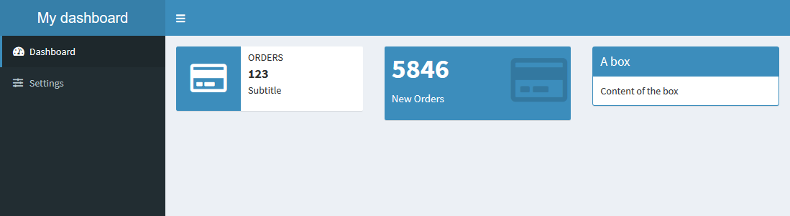

{shinydashboard} is
powered by AdminLTE,
with variables from adminlte_* functions, you can customize
the appearance of your dashboard. Here are some examples of what you can
change.
Colors
There’s a fixed list of colors that you can use in
valueBox, infoBox, box, but which
are also used for other components like the header. Some colors are
associated with a status, for example in valueBox you can
use color = "light-blue", but in box you have
to use status = "pimary" for the same color. The function
adminlte_color() allow you to define those colors:
With the following code we are gonna change the light-blue color that is also the color for the primary status and for the header:
adminlte_color(
light_blue = "#086A87"
)With classic colors from {shinydashboard}, it look like:

With our new theme, we have changed the color of four elements:

Here, we have modified only one color, but you can set values for all the other ones.
Sidebar
One of the main features of {shinydashboard} is the side menu, which
can be modified with adminlte_sidebar().
In the example below, we change the default width of the sidebar as well as its color:
adminlte_sidebar(
width = "400px",
dark_bg = "#D8DEE9",
dark_hover_bg = "#81A1C1",
dark_color = "#2E3440"
)With classic colors from {shinydashboard}, it look like:
With our new theme:

Body
Last set of variables you can use, are for changing background color of the body itself and boxes.
adminlte_global(
content_bg = "#FFFFFF",
box_bg = "#D8DEE9",
info_box_bg = "#D8DEE9"
)With classic colors from {shinydashboard}, it look like:
With our new theme:

Full application
Here’s the code to create the theme and use it in a dashboard application:
library(fresh)
# Create the theme
mytheme <- create_theme(
adminlte_color(
light_blue = "#434C5E"
),
adminlte_sidebar(
width = "400px",
dark_bg = "#D8DEE9",
dark_hover_bg = "#81A1C1",
dark_color = "#2E3440"
),
adminlte_global(
content_bg = "#FFF",
box_bg = "#D8DEE9",
info_box_bg = "#D8DEE9"
)
)
library(shiny)
library(shinydashboard)
ui <- dashboardPage(
header = dashboardHeader(title = "My dashboard"),
sidebar = dashboardSidebar(
sidebarMenu(
menuItem("Dashboard", tabName = "dashboard", icon = icon("dashboard")),
menuItem("Settings", tabName = "settings", icon = icon("sliders"))
)
),
body = dashboardBody(
use_theme(mytheme), # <-- use the theme
tabItems(
tabItem(
"dashboard",
# infoBoxes
fluidRow(
infoBox(
"Orders", "123", "Subtitle", icon = icon("credit-card"),
color = "light-blue"
),
valueBox(
5846, "New Orders", icon = icon("credit-card"),
color = "light-blue"
),
box(
title = "A box", solidHeader = TRUE, width = 4,
status = "primary",
"Content of the box"
)
)
)
)
)
)
server <- function(input, output, session) {
}
shinyApp(ui, server)